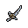
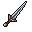

Silver Dagger
Damage: 4
Attack Speed: 4
Damage: 4
Attack Speed: 4

Bone Knife
Damage: 9
Attack Speed: 1
Damage: 9
Attack Speed: 1
You might wonder - what exactly is 1 point of Attack Speed and if it's even worth it when compared to other stats. The answer isn't clear and depends on your current itemization and build.
This article is based on Feb 2025 Playtest, last updated: 2025 Mar 17
The higher Attack Speed is, the lower Attack Interval gets, so your functional DPS increases. However, the more Attack Speed you have, the less effective each additional point becomes. Below you can see the formula for Attack Interval - the time after which the next auto attack happens:
Attack Interval formula
Resulting DPS formula
By default, your Attack Speed is equal to 10, so you attack once every 2 seconds. Let's assume that your Raw Damage (so the damage you deal every hit to an enemy with 0 Armor and 0 Defense) is equal to 15. To get DPS value, you divide Raw Damage by Attack Interval.
| Raw Damage | Attack Speed | Attack Interval | Resulting DPS | % DPS Gain of 1 AtkSpd |
| 15 | 8 | 2.500 | 6.00 | - |
| 15 | 9 | 2.222 | 6.75 | 12.50% |
| 15 | 10 | 2.000 | 7.50 | 11.11% |
| 15 | 11 | 1.818 | 8.25 | 10.00% |
| 15 | 12 | 1.667 | 9.00 | 9.09% |
| 15 | 13 | 1.538 | 9.75 | 8.33% |
| 15 | 14 | 1.429 | 10.50 | 7.69% |
| 15 | 15 | 1.333 | 11.25 | 7.14% |
| 15 | 16 | 1.250 | 12.00 | 6.67% |
| 15 | 17 | 1.176 | 12.75 | 6.25% |
| 15 | 18 | 1.111 | 13.50 | 5.88% |
| 15 | 19 | 1.053 | 14.25 | 5.56% |
| 15 | 20 | 1.000 | 15.00 | 5.26% |
| 15 | 21 | 0.952 | 15.75 | 5.00% |
| 15 | 22 | 0.909 | 16.50 | 4.76% |
The table doesn't take into account minimum-maximum damage ranges, but proportions stay the same.
As you can see, adding one point to go from 12 AtkSpd to 13 AtkSpd results in 8.33% increased DPS. But - the more Attack Speed you have, the less effective each additional point is. Adding 2 points to get from 20 to 22 AtkSpd offers the same net gain (15.00 -> 16.50, so +10% DPS) as adding just 1 point to get from 10 to 11 AtkSpd (also +10% DPS). And it just keeps getting lower.
Just to state the obvious - you rarely fight creatures with 0 Armor and 0 Defense. These two stats on your enemy are both flat and % reductions to the damage you deal. Imagine that you have a weapon that deals 6 Raw Damage and boosts your attack speed to get 10 attacks every second, versus a weapon which deals 60 Raw Damage, but you attack once a second. The both have the same Raw DPS of 60dmg/s. But here's the catch - if the enemy you're fighting has 5 Armor, the first weapon will deal 1 damage per hit, so the resulting DPS would be equal 10. The second weapon will deal 55 damage per hit, so the resulting DPS would be equal 55. So, in this case, the second weapon might be a better choice, even though they have the same Raw Damage output. Maybe a table will show that better:
| Raw Damage | Attack Interval | Target's Armor | Resulting DPS |
| 6 | 0.1 sec | 0 | 60 |
| 60 | 1 sec | 0 | 60 |
| 6 | 0.1 sec | 5 | 10 |
| 60 | 1 sec | 5 | 55 |
| 6 | 0.1 sec | 10 | 0 |
| 60 | 1 sec | 10 | 50 |
The table doesn't take into account minimum-maximum damage ranges, but proportions stay the same.
With low Raw Damage, most of the damage will by mitigated by your target's armor.
Maybe something closer to a real situation would work better. You're still a low level, you've got an Ironsword and you want to know whether it's better to use a Silver Dagger or a Bone Knife as off-hand weapon. While a Silver Dagger would boost your Attackspeed and Raw DPS considerably, you might find it troublesome when fighting heavy-armored enemies.
| Weapon Set | Total Raw DMG | Attack Speed | Target's Armor | Resulting DPS |
|  | 23 | 16 | 0 | 18.4 |
| 28 | 13 | 0 | 18.2 | |
| 23 | 16 | 5 | 13.94 |
| 28 | 13 | 5 | 14.49 | |
| 23 | 16 | 11 | 8.59 |
| 28 | 13 | 11 | 10.05 |
The table doesn't take into account minimum-maximum damage ranges, but proportions stay the same.
As you see, while in theory Silver Dagger offers a slightly higher DPS, in practice it's the Bone Knife that might be the better choice, especially when fighting stronger enemies.
Another example - choosing an off-hand piece for Broadsword, which suffers from -2 Attack Speed penalty. Mitigating this penalty by getting a dagger with Attack Speed bonus does wonders to your DPS.


| Weapon Set | Total Raw DMG | Attack Speed | Resulting DPS |
 | 33 | 8 | 13.2 |
| 35 | 8 | 14.0 |
| 36 | 11 | 19.8 |
| 37 | 8 | 14.8 |
The table doesn't take into account minimum-maximum damage ranges, but proportions would stay mostly the same.
One more element you definitely have to take into consideration are on-hit effects. These are all bonuses which don't scale from extra Damage - like True Grip trait (Mana regen per hit from Gloves), Unnatural Flow trait (bonus damage if you hit the enemy) or low-level Stabbing Preference (Lifeleech from Daggers, which gets rounded up to +1 HP leeched per hit). These traits definitely benefit from higher attack speed, but not at all from extra damage. So if your resources rely on them, you might want to choose Attackspeed over damage in some cases.
Well, yes, but it depends. Attack Speed is good and its effects are palpable, but don't beeline it, as every point of it is less effective than the previous one. Getting +10% Damage is usually much better than 1 AtkSpd, but limits the resources you gain from on-hit traits.